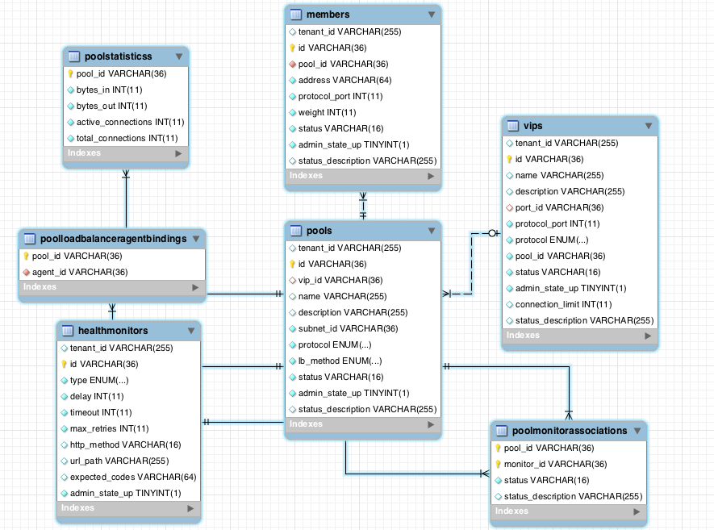

LBaas(负载均衡即服务)是基于neutron组件实现的L4-L7层的服务，目前的实现是社区提供的参考实现，离商用还是有很大一段距离的，不过我们可以大致学习参考下。
下面是network-node上的操作
安装lbaas-agent:
apt-get install neutron-lbaas-agent
修改lbaas_agent.ini
[DEFAULT]
interface_driver = neutron.agent.linux.interface.OVSInterfaceDriver
ovs_use_veth = True
device_driver = neutron.services.loadbalancer.drivers.haproxy.namespace_driver.HaproxyNSDriver
启动LBaas-agent
/usr/bin/python /usr/bin/neutron-lbaas-agent \
--config-file=/etc/neutron/lbaas_agent.ini \
--config-file=/etc/neutron/neutron.conf \
--log-file=/var/log/neutron/lbaas-agent.log
下面是controller-node上的操作
修改neutron.conf，添加一个service_plugins:
#除了router外 还需添加lbaas
service_plugins = router,lbaas
重启neutron-server
修改horizon的local_setting, enable_lb为True:
OPENSTACK_NEUTRON_NETWORK = {
'enable_lb': True,
'enable_firewall': True,
'enable_quotas': True,
'enable_vpn': True,
'profile_support': None,
'profile_support': 'cisco',
}
重启horizon
VIP
可以把一个VIP看做是具有一个虚拟IP地址和指定端口的负载均衡器，当然还有其他的属性，比如均衡算法，协议等。
Pool
一个pool代表一组逻辑设备（通常是同质设备），比如web服务器。负载均衡算法会选择pool中的某一member接收进入系统的流量或连接。目前一个VIP对应一个Pool。
Pool member
代表了后端的一个应用服务器。
Health monitor
一个health monitor用来检测pool内member的状态。一个pool可对应多个health monitor。有四种类型： PING、TCP、HTTP、HTTPS。每种类型就是使用相应的协议对member进行检测。
Session Persistence
规定session相同的连接或请求转发的行为。目前支持三种类型：
SOURCE_IP：指从同一个IP发来的连接请求被某个member接收处理；
HTTP_COOKIE：该模式下，loadbalancer为客户端的第一次连接生成cookie，后续携带该cookie的请求会被某个member处理
APP_COOKIE：该模式下，依靠后端应用服务器生成的cookie决定被某个member处理
Connection Limits
这个特性主要用来抵御DoS攻击
对象关系模型如下:
目前Lbaas的Extension只有一种就是Haproxy，这个配置你可以在neutron.conf中看到:
service_provider=LOADBALANCER:Haproxy:neutron.services.loadbalancer.drivers.haproxy.plugin_driver.HaproxyOnHostPluginDriver:default
我们有两台虚机如下:
20.20.20.2 lb-1
20.20.20.4 lb-2
设置VIP的地址为 20.20.20.6
经过在horizon上一番配置，他会创建一个namespace，并启动一个Haproxy服务:
$ ip netns list
qlbaas-2b66cbf3-a125-4da1-a3c2-3d50a23ef243
qdhcp-d6f4cf71-7937-4d90-8043-748de1e58507
qdhcp-c9137fcf-cb06-4e7f-b856-59d1ccea9a40
$ ip netns exec qlbaas-2b66cbf3-a125-4da1-a3c2-3d50a23ef243 ip -4 a
1: lo: <LOOPBACK,UP,LOWER_UP> mtu 65536 qdisc noqueue state UNKNOWN
inet 127.0.0.1/8 scope host lo
2: ns-13c0163f-2a: <BROADCAST,MULTICAST,UP,LOWER_UP> mtu 1500 qdisc pfifo_fast state UP qlen 1000
inet 20.20.20.6/24 brd 20.20.20.255 scope global ns-13c0163f-2a
#进程
haproxy -f /var/lib/neutron/lbaas/2b66cbf3-a125-4da1-a3c2-3d50a23ef243/conf \
-p /var/lib/neutron/lbaas/2b66cbf3-a125-4da1-a3c2-3d50a23ef243/pid -sf 17149
#对应配置
global
daemon
user nobody
group nogroup
log /dev/log local0
log /dev/log local1 notice
stats socket /var/lib/neutron/lbaas/2b66cbf3-a125-4da1-a3c2-3d50a23ef243/sock mode 0666 level user
defaults
log global
retries 3
option redispatch
timeout connect 5000
timeout client 50000
timeout server 50000
frontend 49d84c18-eea9-47e1-952d-6c8e1cd892ee
option tcplog
bind 20.20.20.6:80
mode http
default_backend 2b66cbf3-a125-4da1-a3c2-3d50a23ef243
option forwardfor
backend 2b66cbf3-a125-4da1-a3c2-3d50a23ef243
mode http
balance roundrobin
option forwardfor
server 344e4f67-6b0a-4ceb-9c63-75ba5b67d476 20.20.20.2:80 weight 1
server e974b81a-05bf-4a08-b9d2-22d4d7d16429 20.20.20.4:80 weight 1
如果你对Haproxy还算了解，那么基本能看出个大概意思，用一句话说明Lbaas-agent做的事，就是把对Lbaas-agent的操作翻译为Haproxy的服务和配置。
关于Haproxy:
关于LBaas-agent: